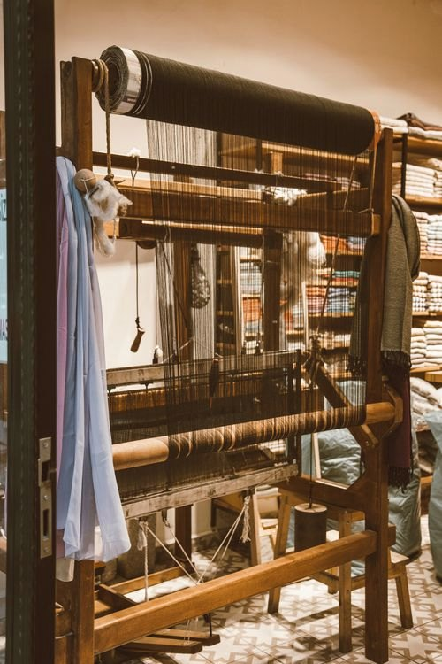

Skip to content
This storefront uses JavaScript for the bag, wishlist, quick view and cookie preferences. Product pages and editorial content remain readable.
Home
Journal
The quiet art of weaving
Journal · Craft
The quiet art of weaving
Inside the looms, hands and slow decisions behind a cloth that is made to be kept.

Craft
·
18 October 2026
·
6 min read
· By
Elena Marsh
Share
More from the journal
Keep reading
All stories